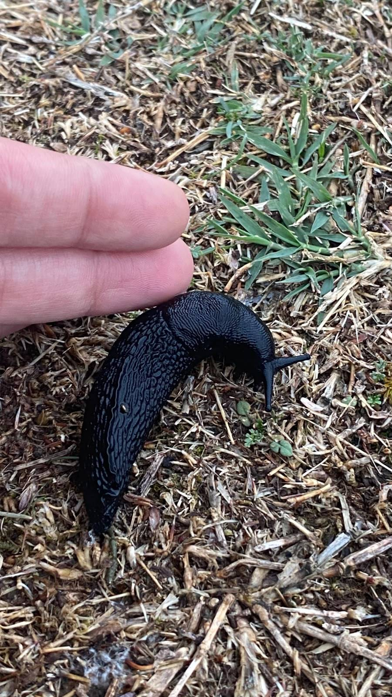

Michel, mon premier habitant
10 octobre 2026

Deux jours que je suis installée dans la forêt, et toujours personne pour venir me saluer. Les ours ont décidé de ne pas se montrer, et il pleut toujours autant.
Ce matin, j'ai décidé de ne pas attendre. J'ai exploré le paillis, le nez au ras du sol, comme on fait quand on veut tout voir avant tout le monde. C'est là que je l'ai trouvé. Une limace. Grosse, noire, luisante, et d'un calme absolu.
Je l'ai saluée. Elle n'a pas répondu. Elle a continué son chemin, très lentement, sans jamais me regarder. J'ai trouvé ça un peu vexant, sur le coup.
Alors je l'ai touchée du bout du doigt, juste pour vérifier qu'elle était réelle. Elle l'était. Elle a fait une petite pause, comme pour réfléchir, puis elle a repris sa route. J'ai compris que c'était sa façon à elle de dire bonjour.
On est restées là un bon moment, moi à regarder, elle à avancer dans le même sens que sa propre patience. Je lui ai donné un nom : Michel. Il n'a pas protesté.
Ce qui m'a surprise, c'est qu'il avait l'air d'écouter quelque chose. Je me suis penchée : il y avait, à peine audible, une petite musique de The Weeknd qui sortait du paillis. Michel est un fan. Pas un fan discret, un fan qui ne parle pas, mais qui en pense beaucoup. Il avance au rythme de « Blinding Lights », lentement, mais avec conviction.
Michel ne m'a pas quittée depuis. Il me suivra tout au long du voyage, à son rythme, qui est le seul rythme qui vaille.